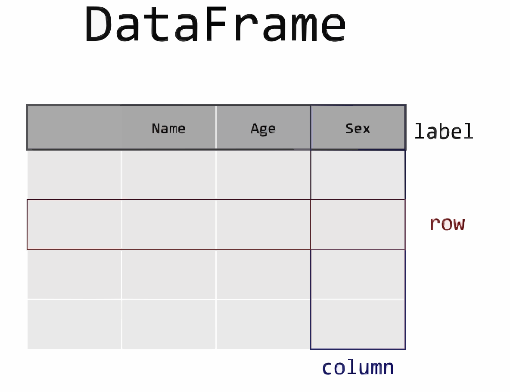

import polars as plData Transformation
Introduction
It’s very rare that data arrive in exactly the right form you need. Often, you’ll need to create some new variables or summaries, or maybe you just want to rename the variables or reorder the observations to make the data a little easier to work with.
You’ll learn how to do all that (and more!) in this chapter, which will introduce you to data transformation using the polars package and a new dataset on flights that departed New York City in 2013.
The goal of this chapter is to give you an overview of all the key tools for transforming a data frame, a special kind of object that holds tabular data.
We’ll come back these functions in more detail in later chapters, as we start to dig into specific types of data (e.g. numbers, strings, dates).
Prerequisites
In this chapter we’ll focus on the polars package, one of the most widely used tools for data science. You’ll need to ensure you have polars installed. To do this, you can run
If this command fails, you don’t have polars installed. Open up the terminal in Visual Studio Code (Terminal -> New Terminal), cd to the folder you are working in, and type in uv add polars.
Furthermore, if you wish to check which version of polars you’re using, it’s
pl.__version__'1.19.0'You’ll also need the data. Most of the time, data will need to be loaded from a file or the internet. These data are no different, but one of the amazing things about polars is how many different types of data it can load, including from files on the internet.
The data is around 50MB in size so you will need a good internet connection or a little patience for it to download.
Let’s download the data:
import io
import requests
url = "https://raw.githubusercontent.com/byuidatascience/data4python4ds/master/data-raw/flights/flights.csv"
resp = requests.get(url, timeout=60)
resp.raise_for_status()
flights = pl.read_csv(
io.BytesIO(resp.content),
null_values=["NA"],
truncate_ragged_lines=True,
ignore_errors=True,
)If the above code worked, then you’ve downloaded the data in CSV format and put it in a data frame. Let’s look at the first few rows using the .head() function that works on all polars data frames.
flights.head()
shape: (5, 19)
| year | month | day | dep_time | sched_dep_time | dep_delay | arr_time | sched_arr_time | arr_delay | carrier | flight | tailnum | origin | dest | air_time | distance | hour | minute | time_hour |
|---|---|---|---|---|---|---|---|---|---|---|---|---|---|---|---|---|---|---|
| i64 | i64 | i64 | i64 | i64 | i64 | i64 | i64 | i64 | str | i64 | str | str | str | i64 | i64 | i64 | i64 | str |
| 2013 | 1 | 1 | 517 | 515 | 2 | 830 | 819 | 11 | "UA" | 1545 | "N14228" | "EWR" | "IAH" | 227 | 1400 | 5 | 15 | "2013-01-01T10:00:00Z" |
| 2013 | 1 | 1 | 533 | 529 | 4 | 850 | 830 | 20 | "UA" | 1714 | "N24211" | "LGA" | "IAH" | 227 | 1416 | 5 | 29 | "2013-01-01T10:00:00Z" |
| 2013 | 1 | 1 | 542 | 540 | 2 | 923 | 850 | 33 | "AA" | 1141 | "N619AA" | "JFK" | "MIA" | 160 | 1089 | 5 | 40 | "2013-01-01T10:00:00Z" |
| 2013 | 1 | 1 | 544 | 545 | -1 | 1004 | 1022 | -18 | "B6" | 725 | "N804JB" | "JFK" | "BQN" | 183 | 1576 | 5 | 45 | "2013-01-01T10:00:00Z" |
| 2013 | 1 | 1 | 554 | 600 | -6 | 812 | 837 | -25 | "DL" | 461 | "N668DN" | "LGA" | "ATL" | 116 | 762 | 6 | 0 | "2013-01-01T11:00:00Z" |
To get more general information on the columns, the data types (dtypes) of the columns, and the size of the dataset, use .glimpse().
flights.glimpse(max_items_per_column=5)Rows: 336776
Columns: 19
$ year <i64> 2013, 2013, 2013, 2013, 2013
$ month <i64> 1, 1, 1, 1, 1
$ day <i64> 1, 1, 1, 1, 1
$ dep_time <i64> 517, 533, 542, 544, 554
$ sched_dep_time <i64> 515, 529, 540, 545, 600
$ dep_delay <i64> 2, 4, 2, -1, -6
$ arr_time <i64> 830, 850, 923, 1004, 812
$ sched_arr_time <i64> 819, 830, 850, 1022, 837
$ arr_delay <i64> 11, 20, 33, -18, -25
$ carrier <str> 'UA', 'UA', 'AA', 'B6', 'DL'
$ flight <i64> 1545, 1714, 1141, 725, 461
$ tailnum <str> 'N14228', 'N24211', 'N619AA', 'N804JB', 'N668DN'
$ origin <str> 'EWR', 'LGA', 'JFK', 'JFK', 'LGA'
$ dest <str> 'IAH', 'IAH', 'MIA', 'BQN', 'ATL'
$ air_time <i64> 227, 227, 160, 183, 116
$ distance <i64> 1400, 1416, 1089, 1576, 762
$ hour <i64> 5, 5, 5, 5, 6
$ minute <i64> 15, 29, 40, 45, 0
$ time_hour <str> '2013-01-01T10:00:00Z', '2013-01-01T10:00:00Z', '2013-01-01T10:00:00Z', '2013-01-01T10:00:00Z', '2013-01-01T11:00:00Z'
You might have noticed the short abbreviations that appear in the dtype column. These tell you the type of the values in their respective columns: i64 is short for integer (eg whole numbers) and f64 is short for double-precision floating point number (these are real numbers). polars has an object data type which allows storing arbitrary Python objects, but this makes you lose performance benefits, as polars is strictly typed. Although not found here, other data types include str for text and datetime for combinations of a date and time.
The table below gives some of the most common data types you are likely to encounter.
| Name of data type | Type of data |
|---|---|
| Float64 | real numbers |
| Categorical | categories |
| Datetime | date and time |
| Date | date |
| Int64 | integers |
| Boolean | True or False |
| String | text |
The different column data types are important because the operations you can perform on a column depend so much on its “type”; for example, you can remove all punctuation from strings while you can multiply ints and floats.
We would like to work with the "time_hour" variable in the form of a datetime; fortunately, polars makes it easy to perform that conversion on that specific column
flights.get_column("time_hour")
shape: (336_776,)
| time_hour |
|---|
| str |
| "2013-01-01T10:00:00Z" |
| "2013-01-01T10:00:00Z" |
| "2013-01-01T10:00:00Z" |
| "2013-01-01T10:00:00Z" |
| "2013-01-01T11:00:00Z" |
| … |
| "2013-09-30T18:00:00Z" |
| "2013-10-01T02:00:00Z" |
| "2013-09-30T16:00:00Z" |
| "2013-09-30T15:00:00Z" |
| "2013-09-30T12:00:00Z" |
flights.with_columns(pl.col("time_hour").str.to_datetime(time_zone="UTC"))
shape: (336_776, 19)
| year | month | day | dep_time | sched_dep_time | dep_delay | arr_time | sched_arr_time | arr_delay | carrier | flight | tailnum | origin | dest | air_time | distance | hour | minute | time_hour |
|---|---|---|---|---|---|---|---|---|---|---|---|---|---|---|---|---|---|---|
| i64 | i64 | i64 | i64 | i64 | i64 | i64 | i64 | i64 | str | i64 | str | str | str | i64 | i64 | i64 | i64 | datetime[μs, UTC] |
| 2013 | 1 | 1 | 517 | 515 | 2 | 830 | 819 | 11 | "UA" | 1545 | "N14228" | "EWR" | "IAH" | 227 | 1400 | 5 | 15 | 2013-01-01 10:00:00 UTC |
| 2013 | 1 | 1 | 533 | 529 | 4 | 850 | 830 | 20 | "UA" | 1714 | "N24211" | "LGA" | "IAH" | 227 | 1416 | 5 | 29 | 2013-01-01 10:00:00 UTC |
| 2013 | 1 | 1 | 542 | 540 | 2 | 923 | 850 | 33 | "AA" | 1141 | "N619AA" | "JFK" | "MIA" | 160 | 1089 | 5 | 40 | 2013-01-01 10:00:00 UTC |
| 2013 | 1 | 1 | 544 | 545 | -1 | 1004 | 1022 | -18 | "B6" | 725 | "N804JB" | "JFK" | "BQN" | 183 | 1576 | 5 | 45 | 2013-01-01 10:00:00 UTC |
| 2013 | 1 | 1 | 554 | 600 | -6 | 812 | 837 | -25 | "DL" | 461 | "N668DN" | "LGA" | "ATL" | 116 | 762 | 6 | 0 | 2013-01-01 11:00:00 UTC |
| … | … | … | … | … | … | … | … | … | … | … | … | … | … | … | … | … | … | … |
| 2013 | 9 | 30 | null | 1455 | null | null | 1634 | null | "9E" | 3393 | null | "JFK" | "DCA" | null | 213 | 14 | 55 | 2013-09-30 18:00:00 UTC |
| 2013 | 9 | 30 | null | 2200 | null | null | 2312 | null | "9E" | 3525 | null | "LGA" | "SYR" | null | 198 | 22 | 0 | 2013-10-01 02:00:00 UTC |
| 2013 | 9 | 30 | null | 1210 | null | null | 1330 | null | "MQ" | 3461 | "N535MQ" | "LGA" | "BNA" | null | 764 | 12 | 10 | 2013-09-30 16:00:00 UTC |
| 2013 | 9 | 30 | null | 1159 | null | null | 1344 | null | "MQ" | 3572 | "N511MQ" | "LGA" | "CLE" | null | 419 | 11 | 59 | 2013-09-30 15:00:00 UTC |
| 2013 | 9 | 30 | null | 840 | null | null | 1020 | null | "MQ" | 3531 | "N839MQ" | "LGA" | "RDU" | null | 431 | 8 | 40 | 2013-09-30 12:00:00 UTC |
polars basics
polars is a really comprehensive package, and this book will barely scratch the surface of what it can do. But it’s built around a few simple ideas that, once they’ve clicked, make life a lot easier.
Let’s start with the absolute basics. The most basic polars object is DataFrame. A DataFrame is a 2-dimensional data structure that can store data of different types (including characters, integers, floating point values, categorical data, even lists) in columns. It is made up of rows and columns (with each row-column cell containing a value), plus contextual information: column names (which carry information about each column).
Note
Note: If you’re coming from pandas, be aware that polars does not use an index column and each row is indexed by its integer position in the table.

df = pl.DataFrame(
data={
"col0": [0, 0, 0, 0],
"col1": [0, 0, 0, 0],
"col2": [0, 0, 0, 0],
"col3": ["a", "b", "b", "a"],
"col4": ["alpha", "gamma", "gamma", "gamma"],
},
)
df.head()
shape: (4, 5)
| col0 | col1 | col2 | col3 | col4 |
|---|---|---|---|---|
| i64 | i64 | i64 | str | str |
| 0 | 0 | 0 | "a" | "alpha" |
| 0 | 0 | 0 | "b" | "gamma" |
| 0 | 0 | 0 | "b" | "gamma" |
| 0 | 0 | 0 | "a" | "gamma" |
You can see there are 5 columns (named "col0" to "col4").
A second key point you should know is that the operations on a polars data frame can be chained together. We need not perform one assignment per line of code; we can actually do multiple assignments in a single command.
Let’s see an example of this. We’re going to string together four operations:
- we will use
filter()to find only the rows where the destination"dest"column has the value"IAH". We use thepl.col()expression to select the column for filtering condition. In effect, this step removes rows we’re not interested in. - we will use
group_by()to group rows by the year, month, and day (we pass a list of columns to thegroup_by()function). - we will choose which columns to perform aggregation on after the
group_by()operation by using thepl.col()expression insideagg(), to select the column. Here we just want one column,"arr_delay". In effect, this step removes columns we’re not interested in. - finally, we must specify what
agg()operation we wish to apply; when aggregating the information in multiple rows down to one row, we need to say how that information should be aggregated. In this case, we’ll use themean(). In effect, this step applies a statistic to the variable(s) we selected earlier, across the groups we created earlier.
flights.filter(pl.col("dest") == "IAH").group_by(["year", "month", "day"]).agg(
pl.col("arr_delay").mean()
)
shape: (365, 4)
| year | month | day | arr_delay |
|---|---|---|---|
| i64 | i64 | i64 | f64 |
| 2013 | 1 | 25 | -10.368421 |
| 2013 | 4 | 27 | -4.5625 |
| 2013 | 4 | 15 | 2.954545 |
| 2013 | 1 | 9 | 18.055556 |
| 2013 | 10 | 24 | 2.809524 |
| … | … | … | … |
| 2013 | 9 | 12 | 50.3125 |
| 2013 | 7 | 20 | -1.5 |
| 2013 | 1 | 18 | -5.210526 |
| 2013 | 10 | 12 | -13.866667 |
| 2013 | 10 | 2 | -19.47619 |
You can see here that we’ve created a new data frame. To do it, we used three key operations:
- manipulating rows
- manipulating columns
- applying statistics
Most operations you could want to do to a single data frame are covered by these, but there are different options for each of them depending on what you need.
Let’s now dig a bit more into these operations.
Manipulating Rows in Data Frames
Let’s create some fake data to show how this works.
import numpy as np
df = pl.DataFrame(
data=np.reshape(range(36), (6, 6)),
schema=["col" + str(i) for i in range(6)],
)
df.insert_column(
6, pl.Series("col6", ["apple", "orange", "pineapple", "mango", "kiwi", "lemon"])
)
df
shape: (6, 7)
| col0 | col1 | col2 | col3 | col4 | col5 | col6 |
|---|---|---|---|---|---|---|
| i64 | i64 | i64 | i64 | i64 | i64 | str |
| 0 | 1 | 2 | 3 | 4 | 5 | "apple" |
| 6 | 7 | 8 | 9 | 10 | 11 | "orange" |
| 12 | 13 | 14 | 15 | 16 | 17 | "pineapple" |
| 18 | 19 | 20 | 21 | 22 | 23 | "mango" |
| 24 | 25 | 26 | 27 | 28 | 29 | "kiwi" |
| 30 | 31 | 32 | 33 | 34 | 35 | "lemon" |
Accessing Rows
To access a particular row directly, you can get that by index (location in the data) or predicate/expression using .row(), which returns as a tuple. Remember that Python indices begin from zero, so to retrieve the first row by index you would use .row(0):
For example,
# Gets the first row of the DataFrame
df.row(0)
# Gets the fifth row of the DataFrame
df.row(4)(24, 25, 26, 27, 28, 29, 'kiwi')We can also access particular rows based on a predicate using .row() with the by_predicate parameter.
df.row(by_predicate=pl.col("col6") == "mango")(18, 19, 20, 21, 22, 23, 'mango')To get the row as a dictionary instead of a tuple with a mapping of column names to row values, specify named=True
# Get the first row of the DataFrame as a dictionary
df.row(0, named=True)
# Get the row where col6 is "mango" as a dictionary
df.row(by_predicate=pl.col("col6") == "mango", named=True){'col0': 18,
'col1': 19,
'col2': 20,
'col3': 21,
'col4': 22,
'col5': 23,
'col6': 'mango'}We can also access rows using the .slice() function. As the function name implies, we get a slice of the DataFrame. we can use this to get a single row or a number of rows. To use this, we give it an offset - a start index, negative indexing is supported to index from the bottom of the DataFrame - and a length of the slice. This returns a DataFrame
df.slice(-2, 2)
shape: (2, 7)
| col0 | col1 | col2 | col3 | col4 | col5 | col6 |
|---|---|---|---|---|---|---|
| i64 | i64 | i64 | i64 | i64 | i64 | str |
| 24 | 25 | 26 | 27 | 28 | 29 | "kiwi" |
| 30 | 31 | 32 | 33 | 34 | 35 | "lemon" |
Filtering rows
As with the flights example, we can also filter rows based on a condition using filter():
df.filter((pl.col("col6") == "kiwi") | (pl.col("col6") == "pineapple"))
shape: (2, 7)
| col0 | col1 | col2 | col3 | col4 | col5 | col6 |
|---|---|---|---|---|---|---|
| i64 | i64 | i64 | i64 | i64 | i64 | str |
| 12 | 13 | 14 | 15 | 16 | 17 | "pineapple" |
| 24 | 25 | 26 | 27 | 28 | 29 | "kiwi" |
For numbers, you can also use the greater than and less than signs:
df.filter(pl.col("col0") > 6)
shape: (4, 7)
| col0 | col1 | col2 | col3 | col4 | col5 | col6 |
|---|---|---|---|---|---|---|
| i64 | i64 | i64 | i64 | i64 | i64 | str |
| 12 | 13 | 14 | 15 | 16 | 17 | "pineapple" |
| 18 | 19 | 20 | 21 | 22 | 23 | "mango" |
| 24 | 25 | 26 | 27 | 28 | 29 | "kiwi" |
| 30 | 31 | 32 | 33 | 34 | 35 | "lemon" |
In fact, there are lots of options that work with filter(): as well as > (greater than), you can use >= (greater than or equal to), < (less than), <= (less than or equal to), == (equal to), and != (not equal to). You can also use operators & as well as | to combine multiple conditions. Here’s an example of & from the flights data frame:
# Flights that departed on January 1
flights.filter((pl.col("month") == 1) & (pl.col("day") <= 5))
shape: (4_334, 19)
| year | month | day | dep_time | sched_dep_time | dep_delay | arr_time | sched_arr_time | arr_delay | carrier | flight | tailnum | origin | dest | air_time | distance | hour | minute | time_hour |
|---|---|---|---|---|---|---|---|---|---|---|---|---|---|---|---|---|---|---|
| i64 | i64 | i64 | i64 | i64 | i64 | i64 | i64 | i64 | str | i64 | str | str | str | i64 | i64 | i64 | i64 | str |
| 2013 | 1 | 1 | 517 | 515 | 2 | 830 | 819 | 11 | "UA" | 1545 | "N14228" | "EWR" | "IAH" | 227 | 1400 | 5 | 15 | "2013-01-01T10:00:00Z" |
| 2013 | 1 | 1 | 533 | 529 | 4 | 850 | 830 | 20 | "UA" | 1714 | "N24211" | "LGA" | "IAH" | 227 | 1416 | 5 | 29 | "2013-01-01T10:00:00Z" |
| 2013 | 1 | 1 | 542 | 540 | 2 | 923 | 850 | 33 | "AA" | 1141 | "N619AA" | "JFK" | "MIA" | 160 | 1089 | 5 | 40 | "2013-01-01T10:00:00Z" |
| 2013 | 1 | 1 | 544 | 545 | -1 | 1004 | 1022 | -18 | "B6" | 725 | "N804JB" | "JFK" | "BQN" | 183 | 1576 | 5 | 45 | "2013-01-01T10:00:00Z" |
| 2013 | 1 | 1 | 554 | 600 | -6 | 812 | 837 | -25 | "DL" | 461 | "N668DN" | "LGA" | "ATL" | 116 | 762 | 6 | 0 | "2013-01-01T11:00:00Z" |
| … | … | … | … | … | … | … | … | … | … | … | … | … | … | … | … | … | … | … |
| 2013 | 1 | 5 | 2355 | 2359 | -4 | 425 | 442 | -17 | "B6" | 707 | "N583JB" | "JFK" | "SJU" | 193 | 1598 | 23 | 59 | "2013-01-06T04:00:00Z" |
| 2013 | 1 | 5 | 2357 | 2359 | -2 | 432 | 437 | -5 | "B6" | 727 | "N649JB" | "JFK" | "BQN" | 195 | 1576 | 23 | 59 | "2013-01-06T04:00:00Z" |
| 2013 | 1 | 5 | null | 1400 | null | null | 1518 | null | "EV" | 5712 | "N827AS" | "JFK" | "IAD" | null | 228 | 14 | 0 | "2013-01-05T19:00:00Z" |
| 2013 | 1 | 5 | null | 840 | null | null | 1001 | null | "9E" | 3422 | null | "JFK" | "BOS" | null | 187 | 8 | 40 | "2013-01-05T13:00:00Z" |
| 2013 | 1 | 5 | null | 1430 | null | null | 1735 | null | "AA" | 883 | "N544AA" | "EWR" | "DFW" | null | 1372 | 14 | 30 | "2013-01-05T19:00:00Z" |
Note that equality is tested by == and not by =, because the latter is used for assignment.
Re-arranging Rows
Again and again, you will want to re-order the rows of your data frame according to the values in a particular column. polars makes this very easy via the .sort() function. You can sort by single or multiple column names and also by expressions. If you provide more than one column name, each additional column will be used to break ties in the values of preceding columns. For example, the following code sorts by the departure time, which is spread over four columns.
flights.sort("dep_time")
shape: (336_776, 19)
| year | month | day | dep_time | sched_dep_time | dep_delay | arr_time | sched_arr_time | arr_delay | carrier | flight | tailnum | origin | dest | air_time | distance | hour | minute | time_hour |
|---|---|---|---|---|---|---|---|---|---|---|---|---|---|---|---|---|---|---|
| i64 | i64 | i64 | i64 | i64 | i64 | i64 | i64 | i64 | str | i64 | str | str | str | i64 | i64 | i64 | i64 | str |
| 2013 | 1 | 1 | null | 1630 | null | null | 1815 | null | "EV" | 4308 | "N18120" | "EWR" | "RDU" | null | 416 | 16 | 30 | "2013-01-01T21:00:00Z" |
| 2013 | 1 | 1 | null | 1935 | null | null | 2240 | null | "AA" | 791 | "N3EHAA" | "LGA" | "DFW" | null | 1389 | 19 | 35 | "2013-01-02T00:00:00Z" |
| 2013 | 1 | 1 | null | 1500 | null | null | 1825 | null | "AA" | 1925 | "N3EVAA" | "LGA" | "MIA" | null | 1096 | 15 | 0 | "2013-01-01T20:00:00Z" |
| 2013 | 1 | 1 | null | 600 | null | null | 901 | null | "B6" | 125 | "N618JB" | "JFK" | "FLL" | null | 1069 | 6 | 0 | "2013-01-01T11:00:00Z" |
| 2013 | 1 | 2 | null | 1540 | null | null | 1747 | null | "EV" | 4352 | "N10575" | "EWR" | "CVG" | null | 569 | 15 | 40 | "2013-01-02T20:00:00Z" |
| … | … | … | … | … | … | … | … | … | … | … | … | … | … | … | … | … | … | … |
| 2013 | 7 | 28 | 2400 | 2359 | 1 | 411 | 344 | 27 | "B6" | 1503 | "N503JB" | "JFK" | "SJU" | 204 | 1598 | 23 | 59 | "2013-07-29T03:00:00Z" |
| 2013 | 8 | 10 | 2400 | 2245 | 75 | 110 | 1 | 69 | "B6" | 234 | "N328JB" | "JFK" | "BTV" | 53 | 266 | 22 | 45 | "2013-08-11T02:00:00Z" |
| 2013 | 8 | 20 | 2400 | 2359 | 1 | 354 | 350 | 4 | "B6" | 745 | "N708JB" | "JFK" | "PSE" | 201 | 1617 | 23 | 59 | "2013-08-21T03:00:00Z" |
| 2013 | 9 | 2 | 2400 | 2359 | 1 | 411 | 340 | 31 | "B6" | 839 | "N828JB" | "JFK" | "BQN" | 217 | 1576 | 23 | 59 | "2013-09-03T03:00:00Z" |
| 2013 | 9 | 12 | 2400 | 2000 | 240 | 203 | 2230 | 213 | "DL" | 1147 | "N910DE" | "LGA" | "ATL" | 101 | 762 | 20 | 0 | "2013-09-13T00:00:00Z" |
# Sort by multiple columns by passing a list of columns.
flights.sort(["year", "month", "day", "dep_time"])
# Or use positional arguments to sort by multiple columns in the same way.
flights.sort("year", "month", "day", "dep_time")
shape: (336_776, 19)
| year | month | day | dep_time | sched_dep_time | dep_delay | arr_time | sched_arr_time | arr_delay | carrier | flight | tailnum | origin | dest | air_time | distance | hour | minute | time_hour |
|---|---|---|---|---|---|---|---|---|---|---|---|---|---|---|---|---|---|---|
| i64 | i64 | i64 | i64 | i64 | i64 | i64 | i64 | i64 | str | i64 | str | str | str | i64 | i64 | i64 | i64 | str |
| 2013 | 1 | 1 | null | 1935 | null | null | 2240 | null | "AA" | 791 | "N3EHAA" | "LGA" | "DFW" | null | 1389 | 19 | 35 | "2013-01-02T00:00:00Z" |
| 2013 | 1 | 1 | null | 1500 | null | null | 1825 | null | "AA" | 1925 | "N3EVAA" | "LGA" | "MIA" | null | 1096 | 15 | 0 | "2013-01-01T20:00:00Z" |
| 2013 | 1 | 1 | null | 1630 | null | null | 1815 | null | "EV" | 4308 | "N18120" | "EWR" | "RDU" | null | 416 | 16 | 30 | "2013-01-01T21:00:00Z" |
| 2013 | 1 | 1 | null | 600 | null | null | 901 | null | "B6" | 125 | "N618JB" | "JFK" | "FLL" | null | 1069 | 6 | 0 | "2013-01-01T11:00:00Z" |
| 2013 | 1 | 1 | 517 | 515 | 2 | 830 | 819 | 11 | "UA" | 1545 | "N14228" | "EWR" | "IAH" | 227 | 1400 | 5 | 15 | "2013-01-01T10:00:00Z" |
| … | … | … | … | … | … | … | … | … | … | … | … | … | … | … | … | … | … | … |
| 2013 | 12 | 31 | 2321 | 2250 | 31 | 46 | 8 | 38 | "B6" | 2002 | "N179JB" | "JFK" | "BUF" | 66 | 301 | 22 | 50 | "2014-01-01T03:00:00Z" |
| 2013 | 12 | 31 | 2328 | 2330 | -2 | 412 | 409 | 3 | "B6" | 1389 | "N651JB" | "EWR" | "SJU" | 198 | 1608 | 23 | 30 | "2014-01-01T04:00:00Z" |
| 2013 | 12 | 31 | 2332 | 2245 | 47 | 58 | 3 | 55 | "B6" | 486 | "N334JB" | "JFK" | "ROC" | 60 | 264 | 22 | 45 | "2014-01-01T03:00:00Z" |
| 2013 | 12 | 31 | 2355 | 2359 | -4 | 430 | 440 | -10 | "B6" | 1503 | "N509JB" | "JFK" | "SJU" | 195 | 1598 | 23 | 59 | "2014-01-01T04:00:00Z" |
| 2013 | 12 | 31 | 2356 | 2359 | -3 | 436 | 445 | -9 | "B6" | 745 | "N665JB" | "JFK" | "PSE" | 200 | 1617 | 23 | 59 | "2014-01-01T04:00:00Z" |
You can use the keyword argument descending=True to re-order by a column or columns in descending order. For example, this code shows the most delayed flights:
flights.sort("dep_delay", descending=True)
shape: (336_776, 19)
| year | month | day | dep_time | sched_dep_time | dep_delay | arr_time | sched_arr_time | arr_delay | carrier | flight | tailnum | origin | dest | air_time | distance | hour | minute | time_hour |
|---|---|---|---|---|---|---|---|---|---|---|---|---|---|---|---|---|---|---|
| i64 | i64 | i64 | i64 | i64 | i64 | i64 | i64 | i64 | str | i64 | str | str | str | i64 | i64 | i64 | i64 | str |
| 2013 | 1 | 1 | null | 1630 | null | null | 1815 | null | "EV" | 4308 | "N18120" | "EWR" | "RDU" | null | 416 | 16 | 30 | "2013-01-01T21:00:00Z" |
| 2013 | 1 | 1 | null | 1935 | null | null | 2240 | null | "AA" | 791 | "N3EHAA" | "LGA" | "DFW" | null | 1389 | 19 | 35 | "2013-01-02T00:00:00Z" |
| 2013 | 1 | 1 | null | 1500 | null | null | 1825 | null | "AA" | 1925 | "N3EVAA" | "LGA" | "MIA" | null | 1096 | 15 | 0 | "2013-01-01T20:00:00Z" |
| 2013 | 1 | 1 | null | 600 | null | null | 901 | null | "B6" | 125 | "N618JB" | "JFK" | "FLL" | null | 1069 | 6 | 0 | "2013-01-01T11:00:00Z" |
| 2013 | 1 | 2 | null | 1540 | null | null | 1747 | null | "EV" | 4352 | "N10575" | "EWR" | "CVG" | null | 569 | 15 | 40 | "2013-01-02T20:00:00Z" |
| … | … | … | … | … | … | … | … | … | … | … | … | … | … | … | … | … | … | … |
| 2013 | 1 | 29 | 1703 | 1730 | -27 | 1947 | 1957 | -10 | "F9" | 837 | "N208FR" | "LGA" | "DEN" | 250 | 1620 | 17 | 30 | "2013-01-29T22:00:00Z" |
| 2013 | 1 | 11 | 1900 | 1930 | -30 | 2233 | 2243 | -10 | "DL" | 1435 | "N934DL" | "LGA" | "TPA" | 139 | 1010 | 19 | 30 | "2013-01-12T00:00:00Z" |
| 2013 | 11 | 10 | 1408 | 1440 | -32 | 1549 | 1559 | -10 | "EV" | 5713 | "N825AS" | "LGA" | "IAD" | 52 | 229 | 14 | 40 | "2013-11-10T19:00:00Z" |
| 2013 | 2 | 3 | 2022 | 2055 | -33 | 2240 | 2338 | -58 | "DL" | 1715 | "N612DL" | "LGA" | "MSY" | 162 | 1183 | 20 | 55 | "2013-02-04T01:00:00Z" |
| 2013 | 12 | 7 | 2040 | 2123 | -43 | 40 | 2352 | 48 | "B6" | 97 | "N592JB" | "JFK" | "DEN" | 265 | 1626 | 21 | 23 | "2013-12-08T02:00:00Z" |
flights.sort(["dep_delay", "arr_delay"], descending=[True, False])
shape: (336_776, 19)
| year | month | day | dep_time | sched_dep_time | dep_delay | arr_time | sched_arr_time | arr_delay | carrier | flight | tailnum | origin | dest | air_time | distance | hour | minute | time_hour |
|---|---|---|---|---|---|---|---|---|---|---|---|---|---|---|---|---|---|---|
| i64 | i64 | i64 | i64 | i64 | i64 | i64 | i64 | i64 | str | i64 | str | str | str | i64 | i64 | i64 | i64 | str |
| 2013 | 3 | 8 | null | 1800 | null | null | 1937 | null | "UA" | 1177 | null | "LGA" | "ORD" | null | 733 | 18 | 0 | "2013-03-08T23:00:00Z" |
| 2013 | 2 | 8 | null | 1659 | null | null | 1822 | null | "UA" | 531 | null | "EWR" | "BOS" | null | 200 | 16 | 59 | "2013-02-08T21:00:00Z" |
| 2013 | 8 | 13 | null | 1727 | null | null | 1941 | null | "EV" | 5892 | "N16561" | "EWR" | "CVG" | null | 569 | 17 | 27 | "2013-08-13T21:00:00Z" |
| 2013 | 8 | 13 | null | 1225 | null | null | 1338 | null | "EV" | 5897 | "N15973" | "EWR" | "ORF" | null | 284 | 12 | 25 | "2013-08-13T16:00:00Z" |
| 2013 | 9 | 30 | null | 840 | null | null | 1020 | null | "MQ" | 3531 | "N839MQ" | "LGA" | "RDU" | null | 431 | 8 | 40 | "2013-09-30T12:00:00Z" |
| … | … | … | … | … | … | … | … | … | … | … | … | … | … | … | … | … | … | … |
| 2013 | 1 | 29 | 1703 | 1730 | -27 | 1947 | 1957 | -10 | "F9" | 837 | "N208FR" | "LGA" | "DEN" | 250 | 1620 | 17 | 30 | "2013-01-29T22:00:00Z" |
| 2013 | 1 | 11 | 1900 | 1930 | -30 | 2233 | 2243 | -10 | "DL" | 1435 | "N934DL" | "LGA" | "TPA" | 139 | 1010 | 19 | 30 | "2013-01-12T00:00:00Z" |
| 2013 | 11 | 10 | 1408 | 1440 | -32 | 1549 | 1559 | -10 | "EV" | 5713 | "N825AS" | "LGA" | "IAD" | 52 | 229 | 14 | 40 | "2013-11-10T19:00:00Z" |
| 2013 | 2 | 3 | 2022 | 2055 | -33 | 2240 | 2338 | -58 | "DL" | 1715 | "N612DL" | "LGA" | "MSY" | 162 | 1183 | 20 | 55 | "2013-02-04T01:00:00Z" |
| 2013 | 12 | 7 | 2040 | 2123 | -43 | 40 | 2352 | 48 | "B6" | 97 | "N592JB" | "JFK" | "DEN" | 265 | 1626 | 21 | 23 | "2013-12-08T02:00:00Z" |
You can of course combine all of the above row manipulations to solve more complex problems. For example, we could look for the top three destinations of the flights that were most delayed on arrival that left on roughly on time:
(
flights.filter((pl.col("dep_delay") <= 10) & (pl.col("dep_delay") >= -10))
.sort("arr_delay", descending=True)
.head(3)
)
shape: (3, 19)
| year | month | day | dep_time | sched_dep_time | dep_delay | arr_time | sched_arr_time | arr_delay | carrier | flight | tailnum | origin | dest | air_time | distance | hour | minute | time_hour |
|---|---|---|---|---|---|---|---|---|---|---|---|---|---|---|---|---|---|---|
| i64 | i64 | i64 | i64 | i64 | i64 | i64 | i64 | i64 | str | i64 | str | str | str | i64 | i64 | i64 | i64 | str |
| 2013 | 1 | 1 | 1525 | 1530 | -5 | 1934 | 1805 | null | "MQ" | 4525 | "N719MQ" | "LGA" | "XNA" | null | 1147 | 15 | 30 | "2013-01-01T20:00:00Z" |
| 2013 | 1 | 1 | 1740 | 1745 | -5 | 2158 | 2020 | null | "MQ" | 4413 | "N739MQ" | "LGA" | "XNA" | null | 1147 | 17 | 45 | "2013-01-01T22:00:00Z" |
| 2013 | 1 | 2 | 1848 | 1840 | 8 | 2333 | 2151 | null | "9E" | 3325 | "N920XJ" | "JFK" | "DFW" | null | 1391 | 18 | 40 | "2013-01-02T23:00:00Z" |
Exercises
Find all flights that
Had an arrival delay of two or more hours
Flew to Houston (
"IAH"or"HOU")Were operated by United, American, or Delta
Departed in summer (July, August, and September)
Arrived more than two hours late, but didn’t leave late
Were delayed by at least an hour, but made up over 30 minutes in flight
Sort
flightsto find the flights with longest departure delays.Sort
flightsto find the fastest flightsWhich flights traveled the farthest?
Does it matter what order you used
filter()andsort()in if you’re using both? Why/why not? Think about the results and how much work the functions would have to do.
Manipulating Columns
This section will show you how to apply various operations you may need to columns in your data frame.
Creating New Columns
Let’s now move on to creating new columns, either using new information or from existing columns. Given a data frame, df, creating a new column with the same value repeated is done by using .with_columns(), with an expression assigned to a column name. Here we use pl.lit() which returns an expression representing a literal value, 5 in our case.
df = df.with_columns(new_column0=pl.lit(5))
df
shape: (6, 8)
| col0 | col1 | col2 | col3 | col4 | col5 | col6 | new_column0 |
|---|---|---|---|---|---|---|---|
| i64 | i64 | i64 | i64 | i64 | i64 | str | i32 |
| 0 | 1 | 2 | 3 | 4 | 5 | "apple" | 5 |
| 6 | 7 | 8 | 9 | 10 | 11 | "orange" | 5 |
| 12 | 13 | 14 | 15 | 16 | 17 | "pineapple" | 5 |
| 18 | 19 | 20 | 21 | 22 | 23 | "mango" | 5 |
| 24 | 25 | 26 | 27 | 28 | 29 | "kiwi" | 5 |
| 30 | 31 | 32 | 33 | 34 | 35 | "lemon" | 5 |
If we do the same operation again, but this time assigning a Series to the same column, it will overwrite what was already in that column. A Series repesents a single column in a Polars DataFrame. Let’s see this with an example where we put different values in each position by assigning a list to the new column.
df = df.with_columns(new_column0=pl.Series([0, 1, 2, 3, 4, 5]))
df
shape: (6, 8)
| col0 | col1 | col2 | col3 | col4 | col5 | col6 | new_column0 |
|---|---|---|---|---|---|---|---|
| i64 | i64 | i64 | i64 | i64 | i64 | str | i64 |
| 0 | 1 | 2 | 3 | 4 | 5 | "apple" | 0 |
| 6 | 7 | 8 | 9 | 10 | 11 | "orange" | 1 |
| 12 | 13 | 14 | 15 | 16 | 17 | "pineapple" | 2 |
| 18 | 19 | 20 | 21 | 22 | 23 | "mango" | 3 |
| 24 | 25 | 26 | 27 | 28 | 29 | "kiwi" | 4 |
| 30 | 31 | 32 | 33 | 34 | 35 | "lemon" | 5 |
TipExercise
What happens if you try to use assignment where the right-hand side values are longer or shorter than the length of the data frame?
We can actually use .with_columns to create more than one new column:
df = df.with_columns(new_column1=pl.lit(5), new_column2=pl.lit(6))
df
shape: (6, 10)
| col0 | col1 | col2 | col3 | col4 | col5 | col6 | new_column0 | new_column1 | new_column2 |
|---|---|---|---|---|---|---|---|---|---|
| i64 | i64 | i64 | i64 | i64 | i64 | str | i64 | i32 | i32 |
| 0 | 1 | 2 | 3 | 4 | 5 | "apple" | 0 | 5 | 6 |
| 6 | 7 | 8 | 9 | 10 | 11 | "orange" | 1 | 5 | 6 |
| 12 | 13 | 14 | 15 | 16 | 17 | "pineapple" | 2 | 5 | 6 |
| 18 | 19 | 20 | 21 | 22 | 23 | "mango" | 3 | 5 | 6 |
| 24 | 25 | 26 | 27 | 28 | 29 | "kiwi" | 4 | 5 | 6 |
| 30 | 31 | 32 | 33 | 34 | 35 | "lemon" | 5 | 5 | 6 |
Very often, you will want to create a new column or modify a column that is the result of an operation on existing columns. There are a couple of ways to do this. The ‘stand-alone’ method works in a similar way to what we’ve just seen except that we refer to the data frame on the right-hand side of the assignment statement too:
df.with_columns(new_column2=pl.col("col0") - pl.col("new_column0"))
shape: (6, 10)
| col0 | col1 | col2 | col3 | col4 | col5 | col6 | new_column0 | new_column1 | new_column2 |
|---|---|---|---|---|---|---|---|---|---|
| i64 | i64 | i64 | i64 | i64 | i64 | str | i64 | i32 | i64 |
| 0 | 1 | 2 | 3 | 4 | 5 | "apple" | 0 | 5 | 0 |
| 6 | 7 | 8 | 9 | 10 | 11 | "orange" | 1 | 5 | 5 |
| 12 | 13 | 14 | 15 | 16 | 17 | "pineapple" | 2 | 5 | 10 |
| 18 | 19 | 20 | 21 | 22 | 23 | "mango" | 3 | 5 | 15 |
| 24 | 25 | 26 | 27 | 28 | 29 | "kiwi" | 4 | 5 | 20 |
| 30 | 31 | 32 | 33 | 34 | 35 | "lemon" | 5 | 5 | 25 |
We can use .alias() with an expression to assign column names, when creating new columns. We can chain multiple expressions together with .with_columns(), which would create multiple new columns with the names assigned to .alias().
flights.with_columns(
(pl.col("dep_delay") - pl.col("arr_delay")).alias("gain"),
(pl.col("distance") / pl.col("air_time") * 60).alias("speed"),
)
shape: (336_776, 21)
| year | month | day | dep_time | sched_dep_time | dep_delay | arr_time | sched_arr_time | arr_delay | carrier | flight | tailnum | origin | dest | air_time | distance | hour | minute | time_hour | gain | speed |
|---|---|---|---|---|---|---|---|---|---|---|---|---|---|---|---|---|---|---|---|---|
| i64 | i64 | i64 | i64 | i64 | i64 | i64 | i64 | i64 | str | i64 | str | str | str | i64 | i64 | i64 | i64 | str | i64 | f64 |
| 2013 | 1 | 1 | 517 | 515 | 2 | 830 | 819 | 11 | "UA" | 1545 | "N14228" | "EWR" | "IAH" | 227 | 1400 | 5 | 15 | "2013-01-01T10:00:00Z" | -9 | 370.044053 |
| 2013 | 1 | 1 | 533 | 529 | 4 | 850 | 830 | 20 | "UA" | 1714 | "N24211" | "LGA" | "IAH" | 227 | 1416 | 5 | 29 | "2013-01-01T10:00:00Z" | -16 | 374.273128 |
| 2013 | 1 | 1 | 542 | 540 | 2 | 923 | 850 | 33 | "AA" | 1141 | "N619AA" | "JFK" | "MIA" | 160 | 1089 | 5 | 40 | "2013-01-01T10:00:00Z" | -31 | 408.375 |
| 2013 | 1 | 1 | 544 | 545 | -1 | 1004 | 1022 | -18 | "B6" | 725 | "N804JB" | "JFK" | "BQN" | 183 | 1576 | 5 | 45 | "2013-01-01T10:00:00Z" | 17 | 516.721311 |
| 2013 | 1 | 1 | 554 | 600 | -6 | 812 | 837 | -25 | "DL" | 461 | "N668DN" | "LGA" | "ATL" | 116 | 762 | 6 | 0 | "2013-01-01T11:00:00Z" | 19 | 394.137931 |
| … | … | … | … | … | … | … | … | … | … | … | … | … | … | … | … | … | … | … | … | … |
| 2013 | 9 | 30 | null | 1455 | null | null | 1634 | null | "9E" | 3393 | null | "JFK" | "DCA" | null | 213 | 14 | 55 | "2013-09-30T18:00:00Z" | null | null |
| 2013 | 9 | 30 | null | 2200 | null | null | 2312 | null | "9E" | 3525 | null | "LGA" | "SYR" | null | 198 | 22 | 0 | "2013-10-01T02:00:00Z" | null | null |
| 2013 | 9 | 30 | null | 1210 | null | null | 1330 | null | "MQ" | 3461 | "N535MQ" | "LGA" | "BNA" | null | 764 | 12 | 10 | "2013-09-30T16:00:00Z" | null | null |
| 2013 | 9 | 30 | null | 1159 | null | null | 1344 | null | "MQ" | 3572 | "N511MQ" | "LGA" | "CLE" | null | 419 | 11 | 59 | "2013-09-30T15:00:00Z" | null | null |
| 2013 | 9 | 30 | null | 840 | null | null | 1020 | null | "MQ" | 3531 | "N839MQ" | "LGA" | "RDU" | null | 431 | 8 | 40 | "2013-09-30T12:00:00Z" | null | null |
Accessing Columns
Just as with selecting rows, there are many options and ways to select the columns to operate on. The one with the simplest syntax is the name of the data frame followed by square brackets and the column name (as a string)
df["col0"]
shape: (6,)
| col0 |
|---|
| i64 |
| 0 |
| 6 |
| 12 |
| 18 |
| 24 |
| 30 |
If you need to select multiple columns, you cannot just pass a string into df[...]; instead you need to pass an object that is iterable (and so have multiple items). The most straight forward way to select multiple columns is to pass a list. Remember, lists comes in square brackets so we’re going to see something with repeated square brackets: one for accessing the data frame’s innards and one for the list.
df[["col0", "new_column0", "col2"]]
shape: (6, 3)
| col0 | new_column0 | col2 |
|---|---|---|
| i64 | i64 | i64 |
| 0 | 0 | 2 |
| 6 | 1 | 8 |
| 12 | 2 | 14 |
| 18 | 3 | 20 |
| 24 | 4 | 26 |
| 30 | 5 | 32 |
We can also use .select() on the data frame to select columns, passing a single string to select a single column or an iterable, like a list, positional arguments or keyword arguments, to select multiple columns. Using keyword arguments renames the columns in the output
# selecting a single column
df.select("col0")
# Using positional arguments to select multiple columns
df.select("col0", "new_column0", "col2")
# Using keyword arguments to rename columns in the output
df.select(col1="col0", col2="new_column0", col3="col2")
shape: (6, 3)
| col1 | col2 | col3 |
|---|---|---|
| i64 | i64 | i64 |
| 0 | 0 | 2 |
| 6 | 1 | 8 |
| 12 | 2 | 14 |
| 18 | 3 | 20 |
| 24 | 4 | 26 |
| 30 | 5 | 32 |
Expressions are also accepted
df.select(pl.col("col0"), pl.col("new_column0") + 2, pl.col("col2") * 2)
shape: (6, 3)
| col0 | new_column0 | col2 |
|---|---|---|
| i64 | i64 | i64 |
| 0 | 2 | 4 |
| 6 | 3 | 16 |
| 12 | 4 | 28 |
| 18 | 5 | 40 |
| 24 | 6 | 52 |
| 30 | 7 | 64 |
If we want to access particular rows at the same time, we can chain .filter() or .slice() to the .select() function:
df.select("col0", "new_column0", "col2").slice(0, 2)
shape: (2, 3)
| col0 | new_column0 | col2 |
|---|---|---|
| i64 | i64 | i64 |
| 0 | 0 | 2 |
| 6 | 1 | 8 |
Sometimes, we’ll want to select columns based on the type of data that they hold. For this, we can call polars data types with an expression inside .select(). Let’s use this to select all columns with integers in the flights data.
flights.select(pl.col(pl.Int64))
shape: (336_776, 14)
| year | month | day | dep_time | sched_dep_time | dep_delay | arr_time | sched_arr_time | arr_delay | flight | air_time | distance | hour | minute |
|---|---|---|---|---|---|---|---|---|---|---|---|---|---|
| i64 | i64 | i64 | i64 | i64 | i64 | i64 | i64 | i64 | i64 | i64 | i64 | i64 | i64 |
| 2013 | 1 | 1 | 517 | 515 | 2 | 830 | 819 | 11 | 1545 | 227 | 1400 | 5 | 15 |
| 2013 | 1 | 1 | 533 | 529 | 4 | 850 | 830 | 20 | 1714 | 227 | 1416 | 5 | 29 |
| 2013 | 1 | 1 | 542 | 540 | 2 | 923 | 850 | 33 | 1141 | 160 | 1089 | 5 | 40 |
| 2013 | 1 | 1 | 544 | 545 | -1 | 1004 | 1022 | -18 | 725 | 183 | 1576 | 5 | 45 |
| 2013 | 1 | 1 | 554 | 600 | -6 | 812 | 837 | -25 | 461 | 116 | 762 | 6 | 0 |
| … | … | … | … | … | … | … | … | … | … | … | … | … | … |
| 2013 | 9 | 30 | null | 1455 | null | null | 1634 | null | 3393 | null | 213 | 14 | 55 |
| 2013 | 9 | 30 | null | 2200 | null | null | 2312 | null | 3525 | null | 198 | 22 | 0 |
| 2013 | 9 | 30 | null | 1210 | null | null | 1330 | null | 3461 | null | 764 | 12 | 10 |
| 2013 | 9 | 30 | null | 1159 | null | null | 1344 | null | 3572 | null | 419 | 11 | 59 |
| 2013 | 9 | 30 | null | 840 | null | null | 1020 | null | 3531 | null | 431 | 8 | 40 |
polars also provides a selectors module that we can use to select columns based on both data types and criteria such as patterns in the name of the column.
import polars.selectors as S
# Select all integer columns
flights.select(S.integer())
# Exclude string columns
flights.select(S.exclude(S.string()))
shape: (336_776, 14)
| year | month | day | dep_time | sched_dep_time | dep_delay | arr_time | sched_arr_time | arr_delay | flight | air_time | distance | hour | minute |
|---|---|---|---|---|---|---|---|---|---|---|---|---|---|
| i64 | i64 | i64 | i64 | i64 | i64 | i64 | i64 | i64 | i64 | i64 | i64 | i64 | i64 |
| 2013 | 1 | 1 | 517 | 515 | 2 | 830 | 819 | 11 | 1545 | 227 | 1400 | 5 | 15 |
| 2013 | 1 | 1 | 533 | 529 | 4 | 850 | 830 | 20 | 1714 | 227 | 1416 | 5 | 29 |
| 2013 | 1 | 1 | 542 | 540 | 2 | 923 | 850 | 33 | 1141 | 160 | 1089 | 5 | 40 |
| 2013 | 1 | 1 | 544 | 545 | -1 | 1004 | 1022 | -18 | 725 | 183 | 1576 | 5 | 45 |
| 2013 | 1 | 1 | 554 | 600 | -6 | 812 | 837 | -25 | 461 | 116 | 762 | 6 | 0 |
| … | … | … | … | … | … | … | … | … | … | … | … | … | … |
| 2013 | 9 | 30 | null | 1455 | null | null | 1634 | null | 3393 | null | 213 | 14 | 55 |
| 2013 | 9 | 30 | null | 2200 | null | null | 2312 | null | 3525 | null | 198 | 22 | 0 |
| 2013 | 9 | 30 | null | 1210 | null | null | 1330 | null | 3461 | null | 764 | 12 | 10 |
| 2013 | 9 | 30 | null | 1159 | null | null | 1344 | null | 3572 | null | 419 | 11 | 59 |
| 2013 | 9 | 30 | null | 840 | null | null | 1020 | null | 3531 | null | 431 | 8 | 40 |
# Select columns that contain "delay" in their name
flights.select(S.contains("delay"))
# Select columns that start with "arr"
flights.select(S.starts_with("arr"))
shape: (336_776, 2)
| arr_time | arr_delay |
|---|---|
| i64 | i64 |
| 830 | 11 |
| 850 | 20 |
| 923 | 33 |
| 1004 | -18 |
| 812 | -25 |
| … | … |
| null | null |
| null | null |
| null | null |
| null | null |
| null | null |
Other selectors commands include ends_with(), by_index(), first(), last(), duration(), numeric(), boolean() and more
Renaming Columns
We use the dedicated rename() function with a mapping, such as a dictionary or a lambda function. Dictionaries in Python consist of curly brackets with comma separated pairs of values where the first values maps into the second value. An example of a dictionary would be {'old_col1': 'new_col1', 'old_col2': 'new_col2'}. Let’s see this in practice (but note that we are not ‘saving’ the resulting data frame, just showing it—to save it, you’d need to add df = to the left-hand side of the code below).
df.rename({"col3": "letters", "col4": "names", "col6": "fruit"})
shape: (6, 10)
| col0 | col1 | col2 | letters | names | col5 | fruit | new_column0 | new_column1 | new_column2 |
|---|---|---|---|---|---|---|---|---|---|
| i64 | i64 | i64 | i64 | i64 | i64 | str | i64 | i32 | i32 |
| 0 | 1 | 2 | 3 | 4 | 5 | "apple" | 0 | 5 | 6 |
| 6 | 7 | 8 | 9 | 10 | 11 | "orange" | 1 | 5 | 6 |
| 12 | 13 | 14 | 15 | 16 | 17 | "pineapple" | 2 | 5 | 6 |
| 18 | 19 | 20 | 21 | 22 | 23 | "mango" | 3 | 5 | 6 |
| 24 | 25 | 26 | 27 | 28 | 29 | "kiwi" | 4 | 5 | 6 |
| 30 | 31 | 32 | 33 | 34 | 35 | "lemon" | 5 | 5 | 6 |
Using a lambda function, maps each column name as its argument, which you can then perform an operation on.
df.rename(lambda column_name: column_name.upper())
shape: (6, 10)
| COL0 | COL1 | COL2 | COL3 | COL4 | COL5 | COL6 | NEW_COLUMN0 | NEW_COLUMN1 | NEW_COLUMN2 |
|---|---|---|---|---|---|---|---|---|---|
| i64 | i64 | i64 | i64 | i64 | i64 | str | i64 | i32 | i32 |
| 0 | 1 | 2 | 3 | 4 | 5 | "apple" | 0 | 5 | 6 |
| 6 | 7 | 8 | 9 | 10 | 11 | "orange" | 1 | 5 | 6 |
| 12 | 13 | 14 | 15 | 16 | 17 | "pineapple" | 2 | 5 | 6 |
| 18 | 19 | 20 | 21 | 22 | 23 | "mango" | 3 | 5 | 6 |
| 24 | 25 | 26 | 27 | 28 | 29 | "kiwi" | 4 | 5 | 6 |
| 30 | 31 | 32 | 33 | 34 | 35 | "lemon" | 5 | 5 | 6 |
Tip
A lambda function is a small, anonymous function in Python that performs a single operation. It’s a shorthand way to create a function without using def.
Re-ordering Columns
By default, new columns are added to the right-hand side of the data frame. But you may have reasons to want the columns to appear in a particular order, or perhaps you’d just find it more convenient to have new columns on the left-hand side when there are many columns in a data frame (which happens a lot).
The simplest way to re-order (all) columns is to create a new list of their names with them in the order that you’d like them: but be careful you don’t forget any columns that you’d like to keep!
Let’s see an example with a fresh version of the fake data from earlier. We’ll put all of the odd-numbered columns first, in descending order, then the even similarly using .select().
df = pl.DataFrame(
data=np.reshape(range(36), (6, 6)), schema=["col" + str(i) for i in range(6)]
)
df
shape: (6, 6)
| col0 | col1 | col2 | col3 | col4 | col5 |
|---|---|---|---|---|---|
| i64 | i64 | i64 | i64 | i64 | i64 |
| 0 | 1 | 2 | 3 | 4 | 5 |
| 6 | 7 | 8 | 9 | 10 | 11 |
| 12 | 13 | 14 | 15 | 16 | 17 |
| 18 | 19 | 20 | 21 | 22 | 23 |
| 24 | 25 | 26 | 27 | 28 | 29 |
| 30 | 31 | 32 | 33 | 34 | 35 |
df = df.select(["col5", "col3", "col1", "col4", "col2", "col0"])
df
shape: (6, 6)
| col5 | col3 | col1 | col4 | col2 | col0 |
|---|---|---|---|---|---|
| i64 | i64 | i64 | i64 | i64 | i64 |
| 5 | 3 | 1 | 4 | 2 | 0 |
| 11 | 9 | 7 | 10 | 8 | 6 |
| 17 | 15 | 13 | 16 | 14 | 12 |
| 23 | 21 | 19 | 22 | 20 | 18 |
| 29 | 27 | 25 | 28 | 26 | 24 |
| 35 | 33 | 31 | 34 | 32 | 30 |
Of course, this is quite tedious if you have lots of columns! There are methods that can help make this easier depending on your context. Perhaps you’d just liked to sort the columns in order? This can be achieved by combining sorted() and the .select() function, passing the DataFrame .columns.
# Alphabetical order
df.select(sorted(df.columns))
# Reverse alphabetical order
df.select(sorted(df.columns, reverse=True))
shape: (6, 6)
| col5 | col4 | col3 | col2 | col1 | col0 |
|---|---|---|---|---|---|
| i64 | i64 | i64 | i64 | i64 | i64 |
| 5 | 4 | 3 | 2 | 1 | 0 |
| 11 | 10 | 9 | 8 | 7 | 6 |
| 17 | 16 | 15 | 14 | 13 | 12 |
| 23 | 22 | 21 | 20 | 19 | 18 |
| 29 | 28 | 27 | 26 | 25 | 24 |
| 35 | 34 | 33 | 32 | 31 | 30 |
Column and Row Exercises
Compare
air_timewitharr_time - dep_time. What do you expect to see? What do you see? What do you need to do to fix it?Compare
dep_time,sched_dep_time, anddep_delay. How would you expect those three numbers to be related?Brainstorm as many ways as possible to select
dep_time,dep_delay,arr_time, andarr_delayfromflights.What happens if you include the name of a row or column multiple times when trying to select them?
Grouping and applying summary statistics
So far you’ve learned about working with rows and columns. polars gets even more powerful when you add in the ability to work with groups. And because groups tend to imply an aggregation or pooling of data, they go hand-in-glove with the application of a summary statistic.
The diagram below gives a sense of how these operations can proceed together. Note that the ‘split’ operation is achieved through grouping, while apply produces summary statistics. At the end, you get a data frame with a new index (one entry per group) in what is shown as the ‘combine’ step.

Grouping and Aggregating
Let’s take a look at creating a group using the .group_by() function, then followed by the .agg() function for aggregation, selecting a column and applying a summary statistic via an aggregation.
flights.group_by("month").agg(pl.col("dep_delay").mean())
shape: (12, 2)
| month | dep_delay |
|---|---|
| i64 | f64 |
| 9 | 6.722476 |
| 3 | 13.227076 |
| 12 | 16.576688 |
| 11 | 5.435362 |
| 6 | 20.846332 |
| … | … |
| 10 | 6.243988 |
| 8 | 12.61104 |
| 5 | 12.986859 |
| 7 | 21.727787 |
| 1 | 10.036665 |
This now represents the mean departure delay by month. The mechanics happenning here is that the DataFrame is grouped by each unique item in the “month” column and then a mean summary statistic is derived on the “dep_delay” column from each group.
Other summary statistics can be derived from aggregations. Some common options are in the table below:
| Aggregation | Description |
|---|---|
count() |
Number of non-null items |
len() |
Number of all items |
first(), last() |
First and last item |
mean(), median() |
Mean and median |
min(), max() |
Minimum and maximum |
std(), var() |
Standard deviation and variance |
mad() |
Mean absolute deviation |
product() |
Product of all items |
sum() |
Sum of all items |
value_counts() |
Counts of unique values |
For doing multiple aggregations on multiple columns with new names for the output variables, the syntax becomes
# Multiple aggregations using polars' syntactic sugar (shorthand) for mean and count
flights.group_by("month").agg(
mean_delay=pl.mean("dep_delay"),
count_flights=pl.count("dep_delay"),
)
shape: (12, 3)
| month | mean_delay | count_flights |
|---|---|---|
| i64 | f64 | u32 |
| 9 | 6.722476 | 27122 |
| 12 | 16.576688 | 27110 |
| 3 | 13.227076 | 27973 |
| 6 | 20.846332 | 27234 |
| 1 | 10.036665 | 26483 |
| … | … | … |
| 4 | 13.938038 | 27662 |
| 2 | 10.816843 | 23690 |
| 5 | 12.986859 | 28233 |
| 11 | 5.435362 | 27035 |
| 8 | 12.61104 | 28841 |
Means and counts can get you a surprisingly long way in data science!
Grouping by multiple variables
This is as simple as passing .group_by() a list or multiple strings representing columns instead of a single string representing a single column.
month_year_delay = flights.group_by("month", "year").agg(
mean_delay=pl.mean("dep_delay"),
count_flights=pl.count("dep_delay"),
)
month_year_delay
shape: (12, 4)
| month | year | mean_delay | count_flights |
|---|---|---|---|
| i64 | i64 | f64 | u32 |
| 5 | 2013 | 12.986859 | 28233 |
| 9 | 2013 | 6.722476 | 27122 |
| 10 | 2013 | 6.243988 | 28653 |
| 8 | 2013 | 12.61104 | 28841 |
| 6 | 2013 | 20.846332 | 27234 |
| … | … | … | … |
| 12 | 2013 | 16.576688 | 27110 |
| 7 | 2013 | 21.727787 | 28485 |
| 3 | 2013 | 13.227076 | 27973 |
| 2 | 2013 | 10.816843 | 23690 |
| 1 | 2013 | 10.036665 | 26483 |
Groupby Exercises
Which carrier has the worst delays? Challenge: can you disentangle the effects of bad airports vs. bad carriers? Why/why not? (Hint: think about
flights.group_by(["carrier", "dest"]))Find the most delayed flight to each destination.
How do delays vary over the course of the day?